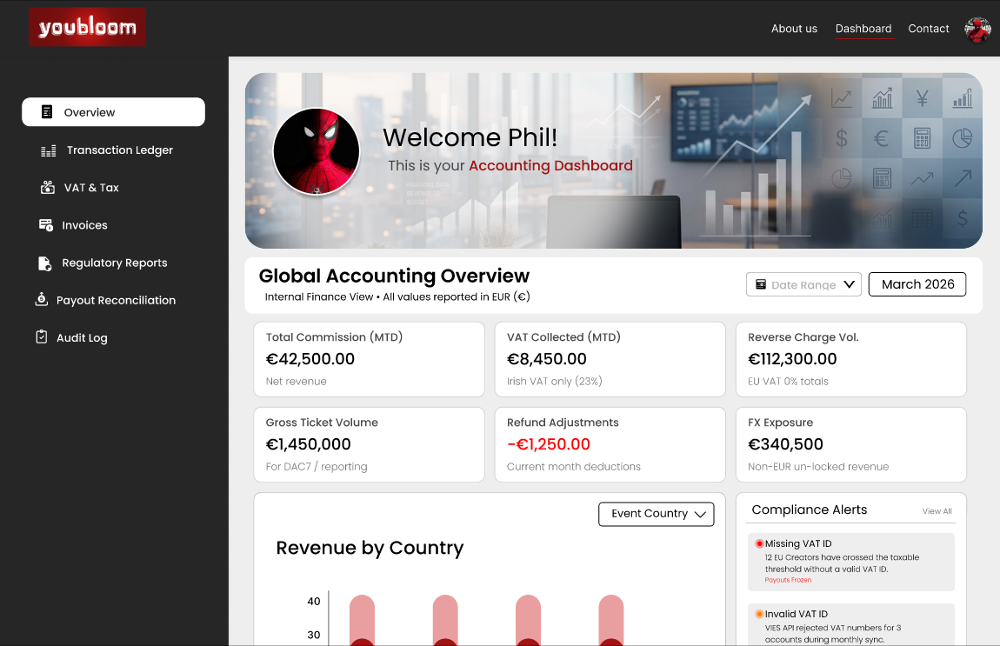
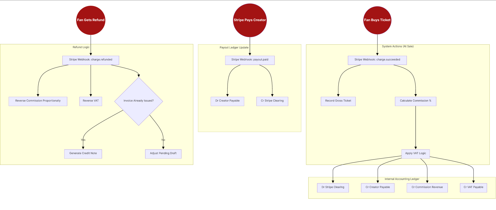
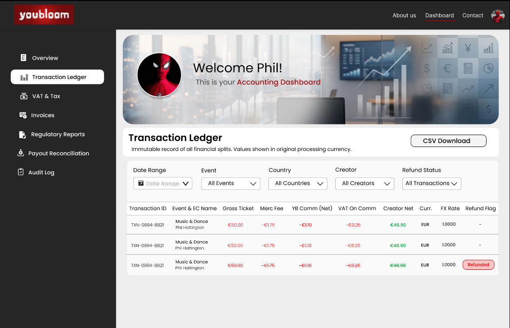

Scalable FinTech Infrastructure: Global Accounting & Compliance Dashboard
1. The Overview
As youbloom transitioned to a global two-sided marketplace, international tax compliance became a critical liability. The platform needed an "investor-grade" compliance system to handle cross-border taxes (EU DAC7, Irish VAT, US 1099-K) on platform commissions.
My objective was to translate a dense 26-page regulatory Business Requirements Document (BRD) into an intuitive, automated, and immutable financial dashboard that protects the company and removes friction for creators.

2. The Problem Space: Balancing Users and Regulations
Before diving into complex legal requirements, I conducted qualitative user interviews with the internal finance team and event creators to ground the design in actual user needs.
User Pain Points Discovered
Blind Spots
Finance lacked a centralized way to view individual creator tax details and specific event sales.
Data Rigidity & Trapped Data
Accountants needed granular filtering (date, event, country) and a one-click CSV export to migrate data into external accounting tools.
Missing Paperwork
Both creators and finance teams lacked an automated system for generating, tracking, and downloading monthly tax invoices.
The Business Constraints (The BRD)
- The system had to automatically apply complex cross-border VAT logic (e.g., Irish 23% vs. EU Reverse Charge).
- Once a month was "closed," financial data and FX rates had to be legally immutable (locked forever).
- The UI needed to strictly avoid gradients and complex visuals, prioritizing a clean, structured hierarchy for internal governance.
3. My Process & Strategy
To stand out in today’s technical landscape, I approached this not just as a visual exercise, but as a systems engineering challenge.
1. Designing for API Integration & Automation: Instead of drawing static screens, I designed UI states that directly mapped to backend webhook triggers. I integrated UI feedback for the EU VIES API validation and US 1099-K Stripe thresholds, showing a deep understanding of data flow.
2. Component-Driven Architecture: I established a strict Figma Component Library first (Process Blocks, Decision Diamonds, Severity Badges, Status Chips). This ensured fast iteration and maintained absolute visual consistency.
3. Cross-Functional Alignment (Mermaid.js): To prevent developer handoff friction, I wrote Mermaid.js architecture diagrams. I mapped the charge.succeeded and payout.paid Stripe webhooks to the accounting ledger logic, ensuring total alignment before coding began.
4. Workflow Governance Design: I designed a "Phase 1 Certification Process" Swimlane diagram, mapping out the Go/No-Go feature deployment process across BA, QA, CTO, and CEO lanes, setting the stage for future AI automation.

4. The Solution: A Modular FinTech Ecosystem
To solve the dual needs of the business and the users, I split the architecture into role-specific modules.
Module A: The Internal Finance Overview
I designed a high-level executive view featuring 6 core KPI cards (Total Commission, VAT Collected, Reverse Charge Volume, etc.) and a dynamic Revenue bar chart. To ensure proactive compliance, I included a color-coded "Compliance Alerts Panel" that flags missing VAT IDs or DAC7 profile gaps in real-time.

Modules B & C: Transaction Ledger & Creator Tax Profile
Solving the Filter Pain Point: I built a robust, 10-column immutable data table with heavy filtering capabilities (Date, Event, Country). I utilized strict financial UX color logic (Red for deductions/fees, Green for net payouts) to reduce cognitive load during reconciliation.
The Creator View: I designed a user-facing onboarding form with a "Tax Setup Status Bar" that visually validates EU VAT numbers via the VIES database.

Module D: The Dual-State Invoice Engine
To solve the invoice generation pain point, I designed a module with distinct states:
- Finance View: A control panel allowing accountants to "Generate Drafts" and "Lock Month." I designed explicit visual feedback (a "LOCKED" badge and disabled buttons) to enforce data immutability.
- Creator View: A simplified repository where creators can easily access and download their monthly PDF tax statements.
Modules E & F: Regulatory Exports & Immutable Audit Log
To satisfy government compliance, I designed dedicated export modules for EU DAC7 and Irish VAT3 reporting. I paired this with a read-only Audit Log that tracks every invoice generation and tax edit with exact UTC timestamps.
5. Outcomes & Takeaways
Bridging the Gap
By starting with user interviews and merging them with strict legal compliance documentation, I created a tool that users actually want to use, while legally protecting the company's marketplace infrastructure.
Ready for Scale
The resulting design system and architecture diagrams elevated the project from a simple UI update to an investor-ready, scalable FinTech engine.
Personal Growth
This project deeply sharpened my ability to design for "stateful" financial applications (Draft vs. Locked) and proved the immense value of mapping system architecture alongside visual design to achieve total team alignment.